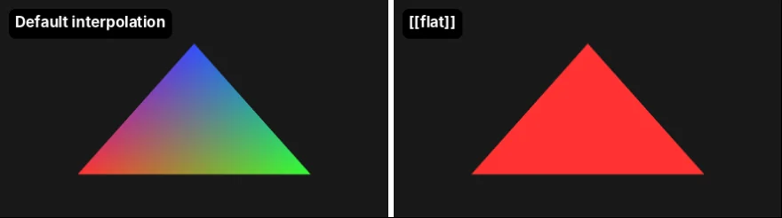

Advanced Metal
Advanced MSL#
This chapter collects features of the Metal Shading Language that do not get a chapter of their own but are worth knowing. Nothing here is required reading; skim it now and return when you need a piece.
Built-in inputs and outputs#
Attributes in double brackets connect variables to values the pipeline provides.
Vertex function inputs
| Attribute | Type | Meaning |
|---|---|---|
[[vertex_id]] |
uint |
Index of the vertex being processed. |
[[instance_id]] |
uint |
Index of the instance. See Instancing. |
[[base_vertex]], [[base_instance]] |
uint |
Offsets given in the draw call. |
Vertex function outputs
| Attribute | Type | Meaning |
|---|---|---|
[[position]] |
float4 |
Clip-space position. Required. |
[[point_size]] |
float |
Size in pixels when drawing .point primitives. |
[[clip_distance]] |
float or array |
Custom clip planes. |
[[render_target_array_index]] |
uint |
Layer or cube face to render into. |
Fragment function inputs
| Attribute | Type | Meaning |
|---|---|---|
[[position]] |
float4 |
Pixel coordinates (x, y), depth (z), and 1/w. |
[[front_facing]] |
bool |
Whether the triangle faces the camera. |
[[point_coord]] |
float2 |
Position inside a point primitive, 0 to 1. |
[[sample_id]], [[sample_mask]] |
uint |
Multisampling details. |
[[color(n)]] |
float4 |
Current value of color attachment n (Apple GPUs). |
Fragment function outputs
| Attribute | Type | Meaning |
|---|---|---|
[[color(n)]] |
float4 etc. |
Value for color attachment n. |
[[depth(any)]] |
float |
Override the fragment's depth. Also greater and less. |
[[sample_mask]] |
uint |
Which samples to write. |
A fragment function with several outputs returns a struct:
struct FragmentOut {
float4 color [[color(0)]];
float4 bright [[color(1)]];
};
Interpolation control#
Members of the vertex output are interpolated with perspective correction by default. You can change that per member:
struct VertexOut {
float4 position [[position]];
float3 normal; // perspective-correct, the default
float4 flatColor [[flat]]; // no interpolation: value of the first vertex
float2 screenUV [[center_no_perspective]]; // linear in screen space
};
[[flat]] is required for integer members, such as a material index passed to the fragment function.

Address spaces#
Every pointer or reference parameter must say where its memory lives:
constant: read-only buffer data. Use it for uniforms.device: read-write buffer data. Use it for large arrays and anything a compute function writes.
vertex VertexOut vertex_main(const device Vertex *vertices [[buffer(0)]],
constant Uniforms &uniforms [[buffer(1)]],
uint vertexID [[vertex_id]]) {
Vertex in = vertices[vertexID];
...
}
This example also shows that a vertex descriptor is optional. A vertex function can fetch its own data from a buffer by index, which is sometimes called vertex pulling. The struct layout must then match the buffer bytes exactly, using packed_float3 where the data is tightly packed.
Function constants#
A value marked as a function constant is fixed when the function is specialized, before the pipeline state is created. The compiler can then remove dead branches entirely:
constant bool useNormalMap [[function_constant(0)]];
constant int lightCount [[function_constant(1)]];
fragment float4 fragment_main(...) {
float3 normal = normalize(in.normal);
if (useNormalMap) {
// compiled out completely when false
}
}
let constants = MTLFunctionConstantValues()
var useNormalMap = true
constants.setConstantValue(&useNormalMap, type: .bool, index: 0)
var lightCount: Int32 = 4
constants.setConstantValue(&lightCount, type: .int, index: 1)
let function = try library.makeFunction(name: "fragment_main", constantValues: constants)
This is Metal's answer to #ifdef shader variants: one source function, many specialized pipeline states.
Argument buffers#
Binding ten textures and three buffers one call at a time is slow when you have thousands of draws. An argument buffer is a struct of resources stored in a buffer and bound with a single call:
struct MaterialArguments {
texture2d<float> baseColor;
texture2d<float> normalMap;
sampler mapSampler;
float roughness;
};
fragment float4 fragment_main(VertexOut in [[stage_in]],
constant MaterialArguments &material [[buffer(2)]]) {
float4 color = material.baseColor.sample(material.mapSampler, in.uv);
...
}
On the Swift side an MTLArgumentEncoder, created from the function with makeArgumentEncoder(bufferIndex:), writes the resources into the buffer. Newer OS versions allow writing resource IDs into the buffer directly. You must also tell the encoder which resources the buffer references, with useResource(_:usage:stages:), so Metal can track them. Argument buffers can contain arrays of textures, which is the foundation of "bindless" rendering and of ray tracing, where any ray may hit any material.
Samplers defined in the shader#
A sampler does not have to come from Swift. It can be declared as a constant:
constexpr sampler linearSampler(filter::linear, mip_filter::linear, address::repeat);
float4 color = colorTexture.sample(linearSampler, in.uv);
It is convenient for post-processing shaders where the settings never change.
Texture functions#
| Call | Purpose |
|---|---|
tex.sample(s, uv) |
Filtered read. |
tex.sample(s, uv, level(2)) |
Read a specific mip level. |
tex.sample(s, uv, bias(1)) |
Offset the automatic mip level. |
tex.sample(s, uv, gradient2d(dx, dy)) |
Supply your own derivatives. |
tex.read(uint2(x, y), lod) |
Exact texel, no sampler. |
tex.gather(s, uv) |
The four neighboring texels of one channel. |
tex.get_width(), tex.get_height(), tex.get_num_mip_levels() |
Queries. |
depthTex.sample_compare(s, uv, ref) |
Depth comparison with filtering, for shadows. |
Precision: half#
half is a 16-bit float. On mobile GPUs half-precision math is faster and uses less power, and it is precise enough for colors and normalized directions. Use float for positions, texture coordinates on large textures, and depth. Literals take an h suffix: half3(0.5h).
Derivatives#
dfdx(v) and dfdy(v) return how fast a value changes between neighboring pixels, and fwidth(v) is the sum of their absolute values. They are the tools for anti-aliased procedural patterns and for computing a flat face normal without vertex normals:
float3 faceNormal = normalize(cross(dfdx(in.worldPosition), dfdy(in.worldPosition)));
Depending on your handedness and winding the result may need to be negated.